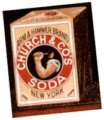
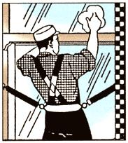
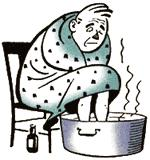
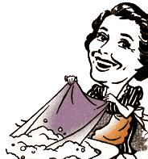

Country Lore
1.Make a non-toxic fungicide. Mix a solution of four teaspoons baking soda and one gallon of water. Spray on grapes and vines when fruit first appears. Spray once a week for two months, and after each rain. Can also be used on rosebushes against black spot fungus.
2. Rejuvenate the greenery. Mix together one teaspoon baking soda, 1/2 teaspoon clear ammonia and one teaspoon Epsom salt in a gallon of water. Use about a quart of the solution on each rosebush-size shrub that's lost its luster.
3. Control cookout flames. Mix a solution of one teaspoon baking soda and one pint of water in a plastic spray bottle. When fire gets too high, spray at the base of the flames.
4. Clean patio furniture. Wash with solution of 1/2 cup baking soda, one tablespoon dishwashing liquid, and one gallon of hot water. Rinse and dry.
5. Remove oil stains from garage floors. Wet the area and scour with baking soda and a scrub brush.
6. Fix a badbattery connection. Make a paste of three parts baking soda to one part water and brush onto corroded battery posts and cable connectors. Rinse and dry. Coat with petroleum jelly to keep terminals trouble-free.
7. Sweeten the RV's water tank. Protect against rancid taste by filling reservoir with a solution of one cup baking soda per gallon of warm water. Drain and fill with plain water. Drain again. Fill with water for trip.
8. Clean tree sap off a car. Rub with baking soda on a damp sponge.
9.Keep windshields streak-free. Scrub dirty wipers with baking soda sprinkled on a damp sponge.
10. Brighten the headlights. Scour dirt, salt, and bugs off with baking soda on a damp sponge.
11. Remove bugs and road splatters from windshields. Sponge off with baking soda. Won't scratch.
12. Extinguish cigarette odor. Sprinkle baking soda into the ashtray.
13. Freshen the floor mats. Clean with a baking soda solution. Sprinkle on dry for tough spots and scrub with brush. Rinse well.
14.Spruce up the fishing gear. Use baking soda solution to clean rods, lines, hooks, and buckets. Won't pollute rivers and lakes.
15. Clean the golf irons. With a brush, apply a baking soda solution over the club.
16.Remove gardening grime from hands. Rub baking soda on wet hands. Rinse.
17. Make an ash metal polish. I'll Mix four tablespoons baking soda with two cups of wood ashes from a fireplace or woodstove. Add a small portion to just enough water to make a paste. With a damp sponge, rub onto stainless steel, chrome, silver, or gold plating. Rinse and dry.
18. Deodorize auto carpets and trunk. Sprinkle baking soda over carpeted area and let sit for 15 minutes before vacuuming.
19. Remove porcupine quills from pets. Mix two teaspoons baking soda in one cup of vinegar. Apply to quill area and wait 10 minutes. Reapply and wait another 10 minutes. Quills should come out easily.
20. Dry-clean the dog. Rub baking soda into dog's fur, then comb it out. Cleans and deodorizes when there's no time for a bath.
21. Freshen the dog's breath. Brush dog's teeth with a toothbrush dipped in baking soda solution.
22. Clean the pet's toys and dishes. Soak everything in a solution of three tablespoons baking soda and one quart warm water. Scour with dry baking soda if necessary.
23. Deodorize pet bedding. Sprinkle baking soda over surface (only if dry). Let sit for 15 minutes, then vacuum.
24. Clean small animal cages. Wipe all surfaces with baking soda sprinkled on a damp sponge. Rinse and dry.
25. Freshen the kitty litter. Spread a layer of baking soda on the bottom of the pan. Then cover with litter.
26. Kill roaches and silverfish. Place a mixture of equal parts baking soda and sugar in infested area. Bugs are attracted to the sugar and will consequently eat too much baking soda.
27. Deodorize a mattress after an accident. Blot wet mattress with towel. Then sprinkle baking soda on damp part. Allow to dry, then vacuum.
28. Clean bibs. Rub baking soda over spit-ups promptly to cut odors and make for easier laundering.
29. Clean and deodorize the microwave. Boil a solution of two tablespoons baking soda and one cup water in the microwave for a few minutes. Then, wipe off all the grime easily.
30. Make a mouthwash. Rinse and gargle with one teaspoon of baking soda in 1/2 cup of water.
31. Brush your teeth. A little baking soda on a wet toothbrush not only cleans your teeth but neutralizes bacterial waste.
32. Treat your feet. Give your tired toes a 10-minute soak in a solution of four tablespoons baking soda and a quart of warm water. Also softens calluses and relieves the itch of athlete's foot.
33. Soften hard bathwater. Add 1/2 cup baking soda to the bath for a relaxing and deodorizing soak. 34. Undermine underarm odors. Sprinkle baking soda under your arms as a natural alternative to sprays and sticks.
35. Take as an antacid. Dissolve 1/2 teaspoon baking soda in 1/2 glass of water and drink slowly.
36. Soothe minor burns and rashes. Apply a paste three parts baking soda, one part water or witch hazel. (Also good for poison ivy itch.)
37. Use as a preshave/aftershave splash. One tablespoon baking soda mixed in a cup of water can minimize razor burns.
38. Dissolve hairspray buildup. Rub a tablespoon of baking soda into lathered hair when shampooing.
39. Clean grooming accessories. Soak brushes, combs, curlers, cosmetic sponges, and applicators overnight in a solution of four tablespoons baking soda and a quart of water.
40. Skid-proof the front steps. Sprinkle baking soda generously on icy steps and walkways. Won't damage floors if tracked inside.
41. Extinguish stove fires. Turn off burner or broiler and toss handfuls of baking soda on the flames.
42. Soften burnt-on food. Cover surfaces of pots and pans with baking soda, add hot water, and let soak for 10 minutes. Then scrub with baking soda on a damp sponge.
43. Deodorize the refrigerator. Place an opened box of baking soda inside. Replace after three months. (Pour the old box down the drain for added benefit.)
44, Clean the kitchen sink. Sprinkle baking soda into sink and add a little vinegar. As it bubbles, scrub with a brush and rinse.
45. Control dishwasher odors. Sprinkle baking soda on the bottom between loads.
46. Bolster your detergent's cleaning power. Add two tablespoons baking soda to the sink or dishpan along with the detergent.
47. Remove scuff marks from linoleum. Wipe with baking soda on a damp sponge.
48. Shine the silverware. Make a paste of equal parts baking soda and warm water. Apply to silver with a sponge. Rub, rinse, and buff dry.
49. Deodorize plastic food containers. Add two tablespoons baking soda and fill container with hot water. Cover and shake. For strong odors, allow to soak overnight.
50. Slip easily into rubber gloves. Pour baking soda into the fingers.
51. Treat the septic tank. Flush a cup of baking soda down the toilet once a week.
52. Clean the toilet bowl. Toss in 1/2 cup of baking soda and scour with toilet brush.
53. Remove grout and tile stains. Make a paste of three parts baking soda to one part water. Apply with damp sponge to tile, and with toothbrush to grout.
54. Renew sponges and scrub brushes. Soak overnight in a baking soda solution.
55. Make an inexpensive plaster. Add just enough white glue to baking soda to make a paste. Apply to cracks with finger.
56. Deodorize musty books. Dry thoroughly. Then sprinkle a little baking soda between pages. Brush out after several days.
57. Remove crayon marks from walls. Sprinkle baking soda on a damp sponge and rub gently with warm water.
58. Polish white baby shoes. Rub with baking soda on a damp sponge. Rinse and buff.
59. Freshen cloth diapers. Soak them in a solution of 1/2 cup baking soda and two quarts water.
60. Clean and deodorize the diaper pail. Wipe inside and out with a solution of baking soda and water.
61. Deodorize baby bottles. Wash first, then fill bottles with baking soda solution and let soak overnight. Rinse well and air dry.
62. Clean baby's high chair. Use a solution of four tablespoons baking soda in a quart of warm water. For tough jobs, scrub with baking soda on a damp sponge.
63. "Dust" the stuffed animals. Place the toys in a large plastic bag with 1/2 cup baking soda. Shake bag vigorously. Let sit for 15 minutes, then brush baking soda off with hairbrush.
64. Sweeten smelly sneakers. Sprinkle a little baking soda inside. Shake out before wearing.
65. Freshen the clothes hamper. Sprinkle baking soda between layers of clothes. Will soften clothes at wash time.
66. Pretreat smelly clothes. Soak clothes for an hour or more in a solution of 1/2 cup baking soda and a gallon of warm water. Launder as normal.
67. Deodorize the carpets. Sprinkle baking soda liberally on carpets. Let sit for 15 minutes before vacuuming.
68. Deodorize a smoke-filled room. Fill a plant mister with a solution of four tablespoons baking soda and a quart of warm water. Spray into smoky air to cut the haze and odor.
69. Polish chrome and stainless steel. Gently rub with baking soda on a damp sponge.
70. Prevent cloudy ice tea. Add a pinch of baking soda to the mixture.
|
 |
|
|
|
 |
|
|
|
|
|
|
|
 |
|
|
|
 |
|
|